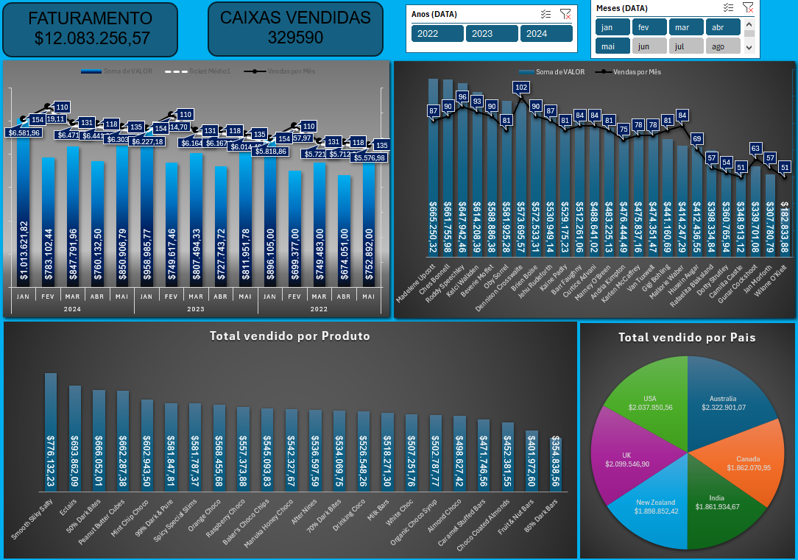
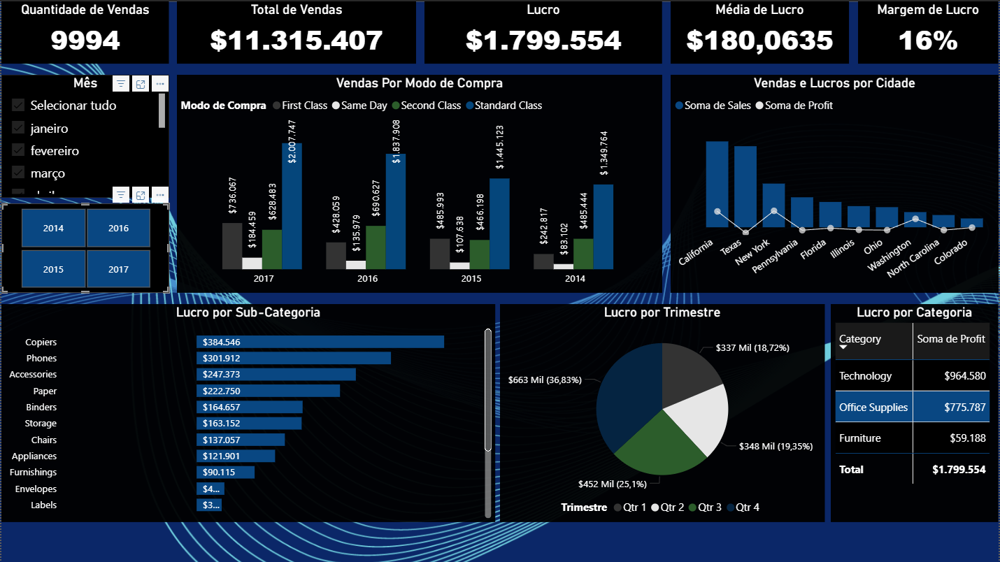

Profissional de TI com experiência em infraestrutura, automação com Python, análise de dados e construção de pipelines ETL. Atualmente atuando na DXC Technology com foco em eficiência operacional e soluções escaláveis.
Profissional de TI com experiência em suporte técnico especializado, infraestrutura e automação de processos. Atuação em ambientes corporativos com foco em mobilidade, gerenciamento de dispositivos (MDM) e análise de dados para geração de insights estratégicos.
Experiência em desenvolvimento de automações com Python, pipelines de ETL e dashboards analíticos que apoiam a tomada de decisões e melhoram a eficiência operacional.
Atuação em gerenciamento de dispositivos móveis utilizando Microsoft Intune (MDM), suporte especializado e automação de processos com Python e Pandas.

Dashboard interativo desenvolvido em Excel para análise de faturamento, vendas por produto e desempenho por país. Utiliza tratamento de dados, tabelas dinâmicas e visualizações para apoiar a tomada de decisão.

Este projeto foi desenvolvido utilizando o Microsoft Power BI com foco em análise de desempenho de vendas e lucratividade.
Em desenvolvimento